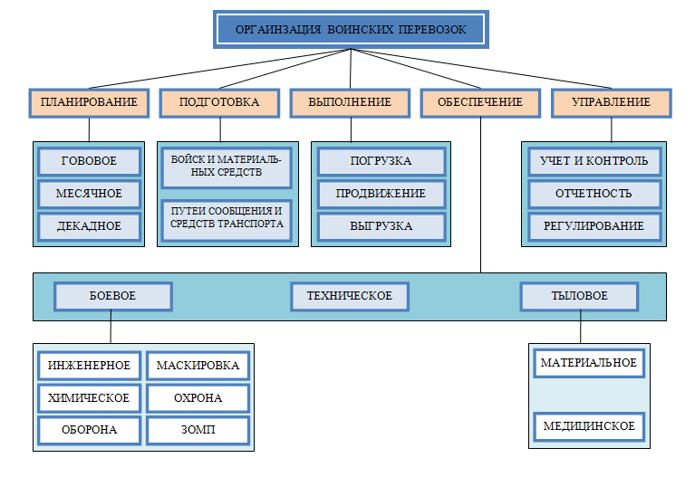

ОСНОВЫ ПЛАНИРОВАНИЯ ВОИНСКИХ Ж.Д. ПЕРЕВОЗОК
Воинскими перевозками называются перевозки войск, воинских грузов, команд, выполняемые различными видами транспорта по планам Министерства обороны.
Выполнение воинских перевозок – это погрузка, продвижение и выгрузка, а в отдельных случаях и перегрузка войск и воинских грузов. Погрузка, выгрузка производится силами и средствами отправителей в объеме и в сроки, установленные планом.
Основными руководящими документами по организации воинских перевозок являются:
— Наставление по перевозкам войск железнодорожным, морским, речным и воздушным транспортом (приказ МО № 180 от 6 июня 1983 г.);
Наставление по перевозкам войск определяет порядок перевозки воинской части, подразделений, команд, а также основные обязанности перевозимых войск, органов военных сообщений и должностных лиц железнодорожного, морского, речного и воздушного транспорта по организации перевозки войск. При организации перевозок войск наставлением в равной степени руководствуются органы военных сообщений, все воинские части и учреждения Вооруженных Сил РФ, а также органы железнодорожного, морского, речного и воздушного транспорта.
Перевозки воинских грузов планируются по заявкам довольствующих управлений, служб и отделов МО и военных округов.
Под организацией воинских перевозок понимается комплекс мероприятий, проводимых органами военных сообщений и транспорта, командованием перевозимых войск, довольствующими управлениями; службами и отделами МО и военных округов, штабами воинских частей и учреждений от момента получения задания на перевозку до ее окончания.
Составными частями процесса организации воинских перевозок являются:
— ПЛАНИРОВАНИЕ;
— ПОДГОТОВКА;
— ОБЕСПЕЧЕНИЕ;
— УПРАВЛЕНИЕ.
